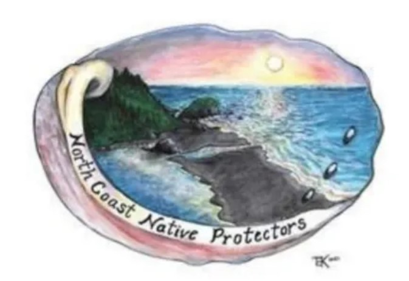
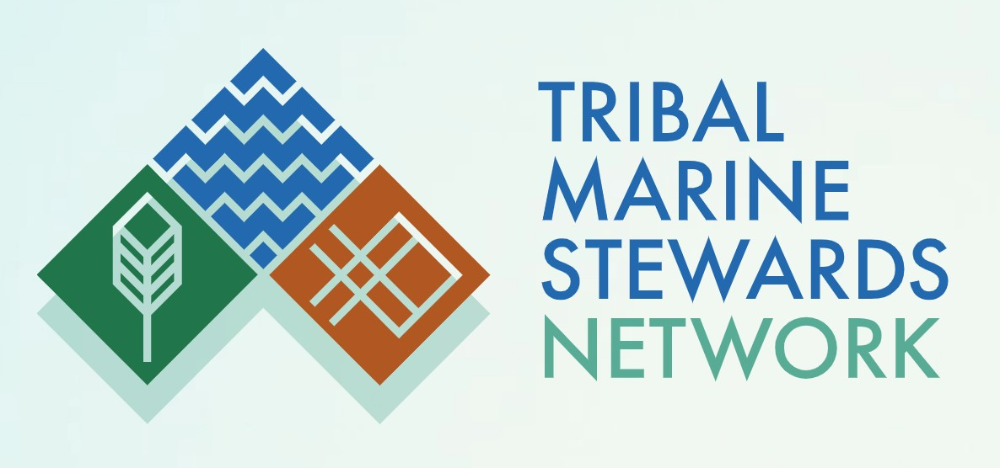
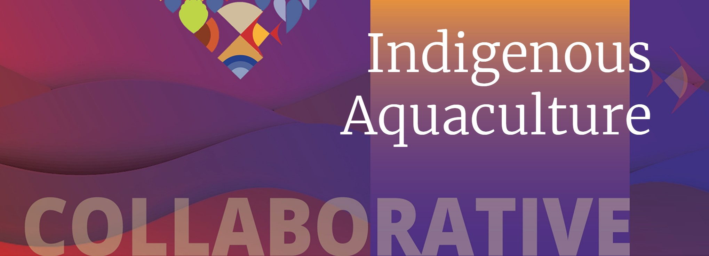
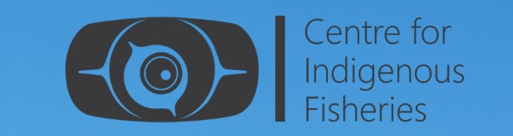
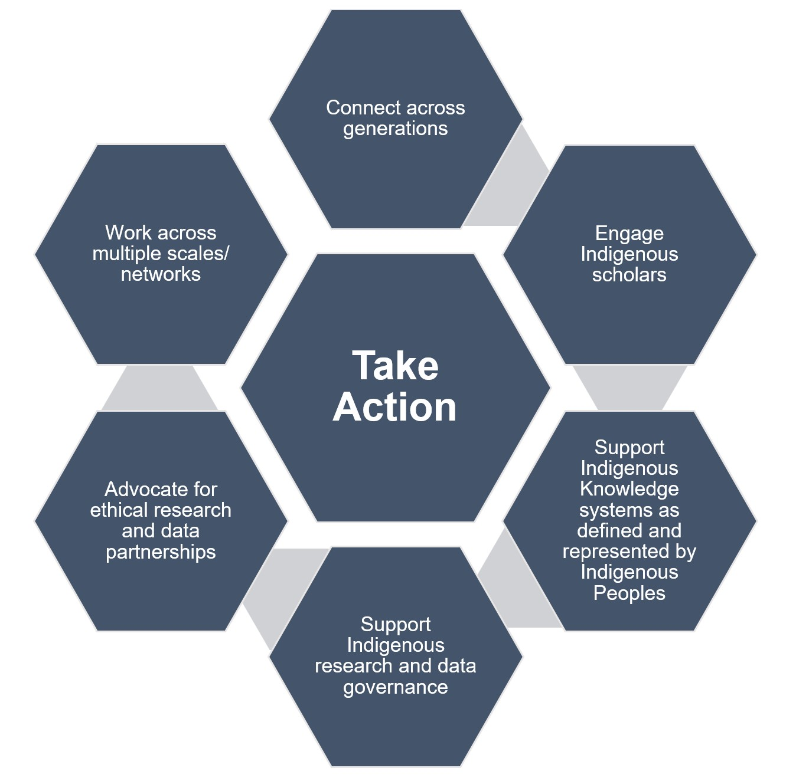

4 Research Partnerships
Tribal Marine Collaborative – North Coast Native Protectors
TMC. 2023.
The collaborative and related North Coast Native Protectors (NCNP) have a mission to:
“Promote clean water, healthy oceans, and Tribal management. Our goal is for Indigenous communities to understand and participate in the community citizen science projects, University research, and marine management that may be happening within their ancestral lands.”
– TMC, 2023
Many of the members of the collaborative actively fish, gather, and steward coastal areas in their lands. The TMC and NCNP support Tribal science and efforts to establish baseline monitoring of under-studied geographies like the North Coast. They are also focused on expanding relationships with other entities in the broader MPA Collaborative Network, which includes 14 MPA Collaboratives throughout California.
Tribal Marine Stewards Network
TMSN, 2023.

The recently commissioned Tribal Marine Stewards Network (TMSN) is a coalition of coastal Tribes focused on “reclaiming our right to manage and steward our ocean and coastal territories, particularly those within and adjacent to Marine Protected Areas.” The four founding member tribes include the Amah Mutsun Tribal Band, Kashia Band of Pomo Indians, Resighini Ranchiera, and Tolowa Dee-Ni’ Nation. This builds on the initial efforts specifically of the Kashia Band in calling attention to the way Native Californians were being sidelined in large scale marine planning. The Ocean Protection Council (OPC) granted TMSN funding in October 2022 to help the network launch initial efforts and expand Tribal capacity.
Indigenous Aquaculture Collaborative Network
IACN. 2023.

In their own words, IACN is “a collaborative network of Pacific-region Sea Grant offices; Northwest Tribes and First Nations, Native Hawaiian and Indigenous communities; and organizations and universities working as a community of practice to advance Indigenous Aquaculture.” Several of their focus projects include loko i’a and clam garden restoration. The collaborative is also focused on convening multi-cultural and cross-regional gatherings to promote knowledge exchange among their partners. Several thought leaders highlighted in this reading list are members of the steering committee. Their “resources” page goes further into several of the initiatives highlighted here.
Center for Indigenous Fisheries
CIF. 2023.

The center, located at the University of British Columbia, aims to produce “science for fish, people, and place.” The vision is to foster research “with and for Indigenous Peoples,” recognizing the pattern of exclusion of Native voices from Western science and scholarship. Work on “two-eye seeing” by the Center’s principal investigator, Andrea Reid, is referenced in the opening section of the co-management chapter. The Center is guided by an Indigenous Advisory Council consisting of seven scholars from across Canada.
Jennifer Sowerwine et al. Journal of Agriculture, Food Systems, and Community Development. 2019.
This article summarizes a five-year partnership between researchers at UC Berkeley and three Tribes (Klamath, Karuk, and Yurok) in the Klamath River region. The partnership was rooted in community-based participatory research (CBPR), recognizing the history of “tribal disenfranchisement” that has led to an erosion of trust and a reluctance on the part of Tribes to participate in partnerships with non-Tribal organizations like universities. Participants were funded by a federal food security grant, treating “food security and food sovereignty as distinct but interrelated concepts.” Partners fostered a “shared vision to leverage the strengths of both Indigenous and Western science to conduct research, education, and extension to restore Native foodways in the Klamath Basin.” This recognizes current “food desert” conditions in a region once storied for its abundance. Researchers surveyed Native people in the region, discovering that “70% of all households never or rarely have access to all desired native foods throughout the year.” This centered around a new definition of Native food security: having physical, economic, social, and legal access to all desired native foods with the appropriate quality and quantity throughout the year, and continuity of the cultural institutions that sustain them, including traditional ecological knowledge, social support networks, and cultural resource stewardship.
The partnership required the “decolonization” of research relationships between UC Berkeley and Tribes in the Klamath Basin, including acknowledgment of the ongoing possession of unceded artifacts and remains.
The key tenet of this partnership is “tribal oversight to protect tribal cultural, intellectual, and material property.” This led to the development of a guidance document co-created by the Karuk Tribe and UC Berkeley. The guidance is rooted in several key principles:
| Principle | Description |
|---|---|
| Community Engaged Scholarship | Research questions are generated by or in collaboration with the Tribe |
| Free, Prior, and Informed Consent | Project leads must disclose the full range of potential benefits and risks associated with the research, all relevant affiliations of the person(s) seeking to undertake research, and all sponsors and funding sources. |
| Benefits to the Tribal Community | Projects should benefit the Tribal community, and associated risks should be minimal. |
| Mentorship/Training/Youth Development | All projects should strive to involve Tribal youth. This may include employment, internships, or volunteer work that supports the development of tribal youth learning opportunities. |
| Confidentiality | Tribe has the right to exclude information from publication and/or to require confidentiality agreements, particularly with respect to information concerning their culture, traditions, sacred sites and spiritual beliefs. |
| Mutual Respect, Inclusiveness, and Empowerment | Necessity for project leaders to respect the integrity, morality, traditions, tribal codes, and spirituality of the Karuk culture, and to avoid imposing external conceptions and standards on community members. |
| Equity/Reciprocity | Reciprocity can take many forms, which may include giving back through financial and/or non-financial means, such as sharing knowledge, networking, or conducting needs-based projects. |
| Self-Determination, Prior Rights, and Inalienability | Indigenous peoples also retain prior proprietary rights and interests over their traditional knowledge; resources, such as air, land, and waterways; as well as associated natural and cultural resources. Project leads must abide by all tribal ordinances, traditional codes and laws. |
| Respecting Indigenous Knowledge and Intellectual Property | While the Tribe shall be recognized and consulted as the primary legal and cultural custodians in any projects or activities that will produce any intellectual property (property) products, it is the researcher or project lead’s responsibility to protect the information and other resources entrusted to them throughout all stages of research and publication processes. Prior to conducting study, collaborators should make themselves aware of any data that is of particular interest to the Tribe and to establish clear agreements over terms for data sharing. |
| Pikyav and Appropriate Conduct | All proposed collaborative projects must incorporate the Tribe’s philosophy and practice of pikyav, including Karuk eco-cultural restoration and revitalization efforts that aim to “fix the world.” |
The Indigenous Food Knowledges Network: Building Indigenous Led Collaborations across Biomes
Mary Beth Jäger et al. Journal of Agriculture, Food Systems, and Community Development 9. 2019.
The purpose of the Indigenous Foods Knowledges Network (IFKN) is “to foster a network of Indigenous leaders, citizens, and scholars who are focused on research and community capacity related to food sover-eignty and resilience.” The network is focused on connecting people in the Arctic and U.S. Southwest.
The network is positioned to foreground two key Indigenous research methodologies:
Relational accountability: honors the importance of relationships inherent in Indigenous Knowledge systems.
Centering of story: the key vessel for the transmittance of Indigenous Knowledge, supported through place-based gatherings that facilitate cross-cultural connection.

Figure 3.1: IFK Network objectives (IFKN, 2019).